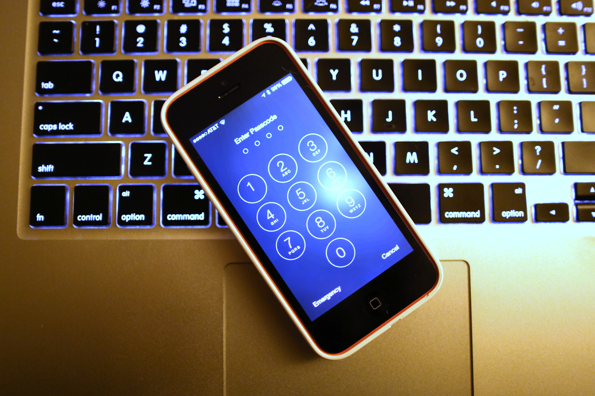

There are many ways in which people can hack laptops and can see your personality and personal stuff. They can also hack your account. To stop this there are five ways.
hacking can be a serious crime, leading to the theft of identifying information or the shutdown of online services. Even those who are not the direct victims of hackers can be affected by computer hacking. These effects manifest in a number of ways, though in some cases, not all of the effects are negative.This is the heyday of ransomware, malware that locks up your precious data and asks for a payment using online currency to get it back. If you’re lucky, that ransomware message might go away with a quick reboot – some of the ransomware messages come from programs that don’t lock up your data (known as scareware). If that reboot comes back to the same ransomware screen or you can’t access your data, you have a few options.
Speaking of passwords: password protect all of your devices, including your desktop, laptop, phone, smartwatch, tablet, camera, lawnmower…you get the idea. The ubiquity of mobile devices makes them especially vulnerable. Lock your phone and make the timeout fairly short. Use fingerprint lock for the iPhone and passkey or swipe for Android. “It’s easy to forget that mobile devices are essentially small computers that just happen to fit in your pocket and can be used as a phone,” says Jean-Philippe Taggart, Senior Security Researcher at Malwarebytes. “Your mobile device contains a veritable treasure trove of personal information and, once unlocked, can lead to devastating consequences.
